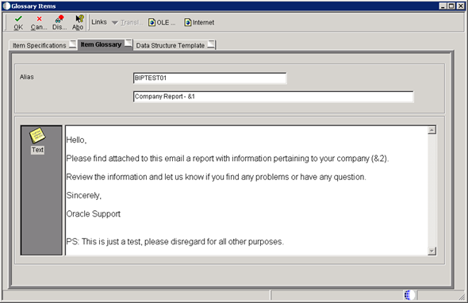
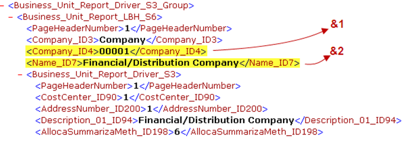
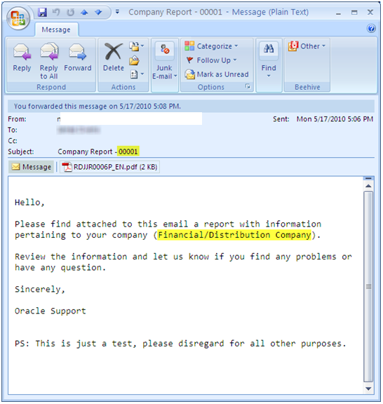

Starting with EnterpriseOne Tools Release 8.98.3.0 and ESU containing enhancement BUG 11019115 for EnterpriseOne 9.0 and BUG 11024413 for EnterpriseOne 8.12, it is possible to deliver BI Publisher reports via e-mail containing a custom subject and body. According to the instructions in the Guide JD Edwards EnterpriseOne Tools Release 8.98 Update 3 Enhanced Embedded BI Publisher Email Delivery Options it is possible to define a custom subject and body that will be used every time the report definition runs.
The subject and body are defined by a custom data item (glossary group 'E') and values that are inserted in placeholders defined in the message. These values are passed via the data structure associated to the custom data item. The actual values are defined by clicking the button "Define Values" in the Report Definition/Burst and Delivery form (P95620).
However, unless these values are manually modified between different runs of the same report definition, the subject and body of the e-mail will be all the same. Similarly, if using burst, all bursted emails will have the same subject and body.
It is possible to dynamically change the e-mail subject or body using substitution parameters that take value from Source XML.
This document contains a step by step example of how to setup custom e-mail subject and body in reports delivered by embedded BI Publisher for EnterpriseOne 8.12 and later, with tools release 8.98.3.0 and later.
Scope
This document is intended for the JDE Report Developer and System administrators who are responsible for customizing the Report definition email delivery
Details
Pre-requisites
Please make sure you follow post install instructions for the ESU containing bug 11024413 for 8.12, and bug 11019115 for 9.0.
After applying ESU and executing their special instructions, ensure tables F95xxxx are generated in each respective environment’s Control Tables data source and that OCM mappings are added accordingly. Failure to execute these instructions will prevent custom email messages from being sent as data structure mappings will not save and text substitution will not work.
Overview
To dynamically change the e-mail subject or body you need to use a substitution parameters of the data structure. These can be mapped with a literal or with report data. The tools code checks for the first character of mapped data, and if it is '/' it treats it as XML field from report data. If the first character is not '/', the value will be treated as literal data.
Note: If you specify a dynamic XML field, make sure it actually exists in the XML source. If the tag is not found in the XML Source it will cause the Report Definition to remain in 'X' status indefinitely and an email will not be delivered. XML PUBLISHER logs will also have message "[Tag_Name] not found in the xml." indicating the issue.
Example
Below are steps demonstrating how to setup a custom email subject and body in bursted BI Publisher output. For this example we will use the standard report R0006P|XJDE0001. The output will be bursted by field with XPATH '/R0006P/Business_Unit_Report_Driver_S3_Group/Business_Unit_Report_LBH_S6'. The Sample Template used in this test is attached and it is provided only for reference.
Identify or create a data structure that can accommodate the values you want to pass into the e-mail subject and/or body
Create a custom data item with glossary group 'E'. The description field will be the e-mail subject. The Item Glossary text will be the body . In tests conducted by Oracle support, the maximum length of the subject field was 256 characters (after values were expanded) and the e-mail body can be up to 16KB.
1. Data Dictionary Item Glossary Text cannot be blank or a space character. Enter a non-blank character such as dot in the glossary text.
2. Ensure OCM for GT92002 maps to Data Dictionary data source in Server Map data source. Otherwise report delivery fails with FD status with message XmlpProxy.sendEMail(): java.lang.NullPointerException in XMLP kernel jas log.
3. It is not currently possible to include any formatting in the body of the email. The message will be sent as a plain text format. Enhancement BUG 16636067 ABILITY TO FORMAT HTML IN BODY OF EMAILS SENT FROM BI PUBLISHER requests such functionality by allowing use of HTML tags inside the glossary field.
4. If ampersand '&' is present in the glossary text of a DD item used in send message, the '&' is dropped in the output message because the system assumes that all '&' are for the purpose of text substitution parameters. Issue is reported in Bug 17259718 ENABLE '&' IN WORKFLOW GLOSSARY DRIVEN EMAIL, fixed in tools release 9.1.4.0.
5. There is no specific limit in the number of text substitution parameters. However if the number of parameters is large (100-150), it can affect performance in loading of the text substitution parameters in the send message system function.

Obtain the XML Source of the EnterpriseOne report and identify the fields you want to include in your custom email subject and/or body

In the Report Definition application / Bursting and Delivery form, enter the alias of your custom data item in the "Data Item for Subject and Body" field. Tab out and then click on the "Define Values" button. This will open the "Structure Member Value Revisions" form
Submit the report definition and verify the results. All bursted outputs were delivered and each e-mail had a specific subject and body

For information on other e-mail Delivery options consult the "JD Edwards EnterpriseOne Tools Release 8.98 Update 3 Enhanced Embedded BI Publisher Email Delivery Options"
Please note that even though new tables F95625 and F95626 were created to hold records for recipient language preference and email body substitution values, no code was written to promote records in these tables. As a result it is necessary to add the values by logging in each environment as promotion will not transfer language preferences and email body substitution records. Defect Bug 18469350 INCOMPLETE PROMOTION BI RELATED OBJECTS was raised to request this behavior to be corrected. The enhancement is first included in EnterpriseOne application release 9.1.4.5.
Make sure that F95625 and F95626 tables have the required OCMs
Make sure to deploy the DD item changes properly ( - End JDE services - Delete the global and data dictionary table specs (glbltbl, dddict, ddtext - .ddb and .xdb) under each pathcode - Restart services)